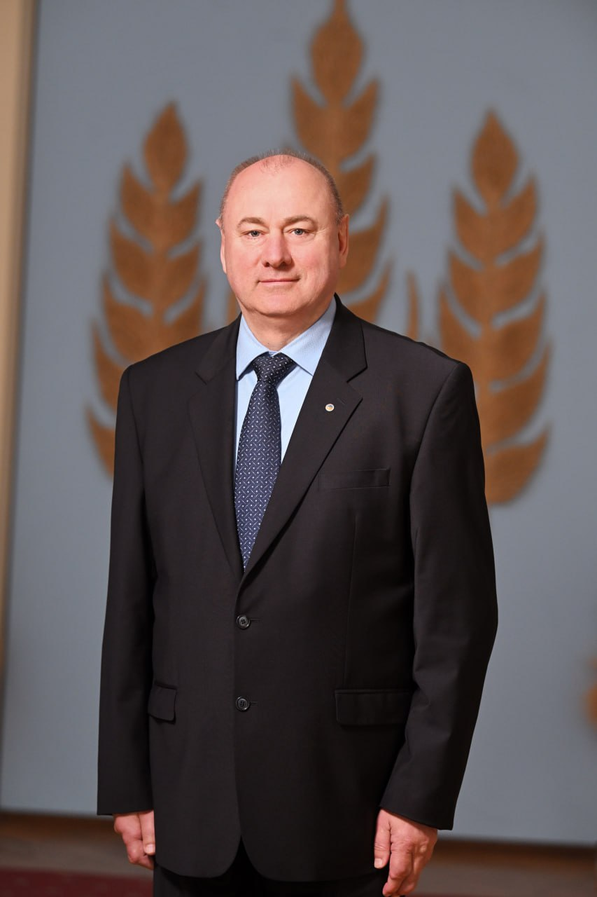
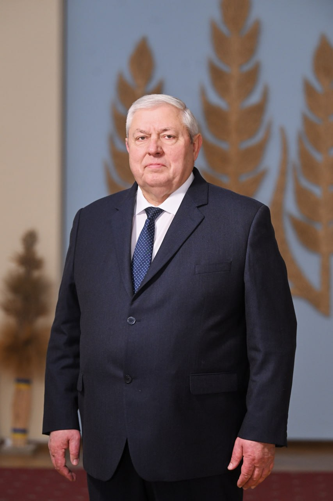
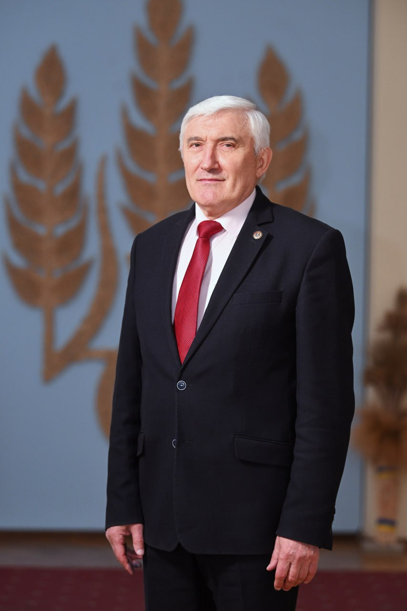
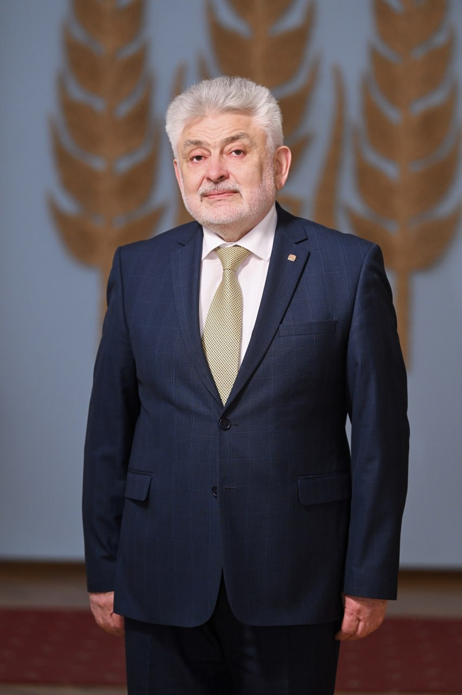
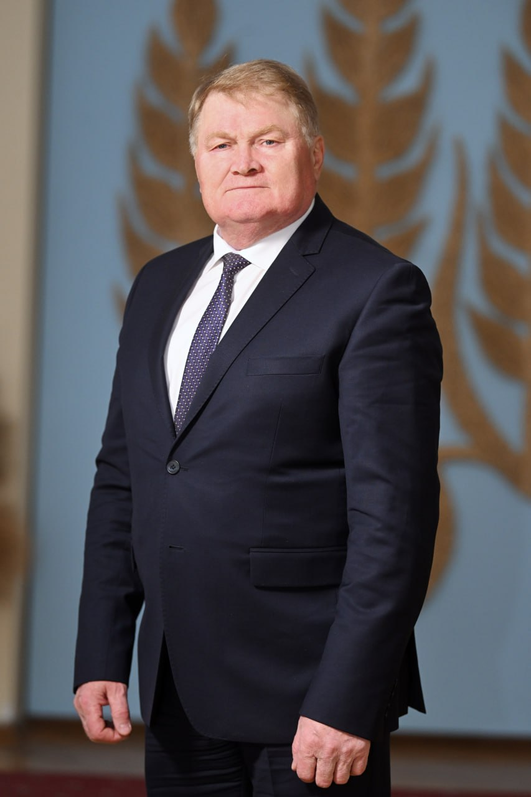
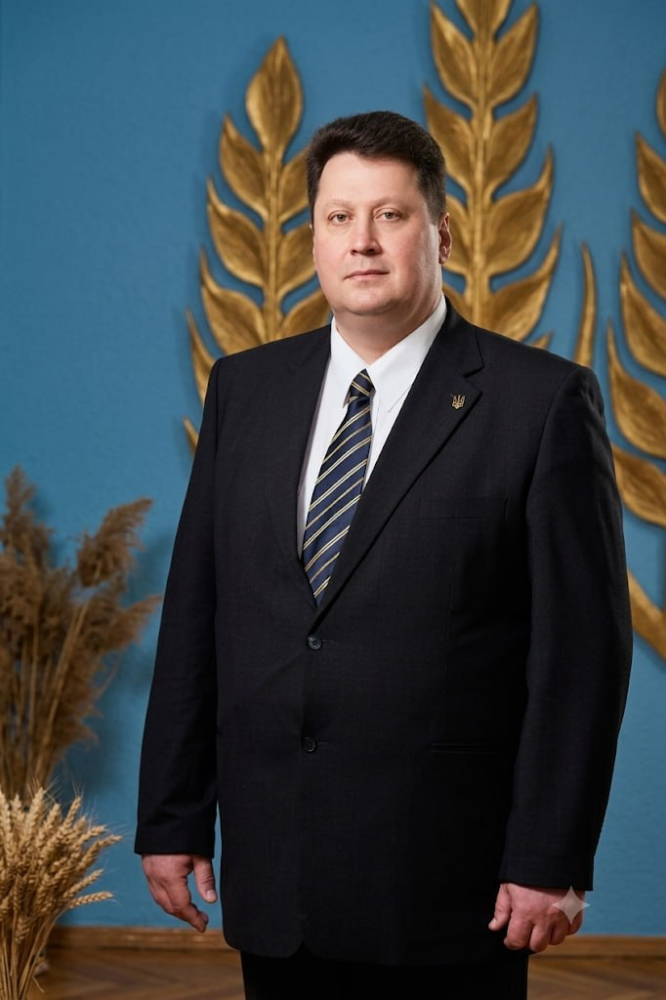

Науково-методичний і координаційний центр з наукових проблем розвитку АПК України.
Національна академія аграрних наук України (НААН) — вища галузева наукова установа держави, головний науково-методичний і координаційний центр з наукових проблем розвитку агропромислового комплексу України. Академія об'єднує шість наукових відділень і мережу з 50 підпорядкованих наукових установ — інститутів, національних наукових центрів та дослідних станцій.
Стрічка формується автоматично з новин шести наукових відділень. Реалізацію передбачено в етапі з системою керування контентом (CMS).
Програми, ліцензії та правила прийому до аспірантури й докторантури.
Спеціалізовані вчені ради та захисти дисертацій.
Фахові наукові видання Академії та вимоги до публікацій.
Державна атестація та акредитація наукових установ.





